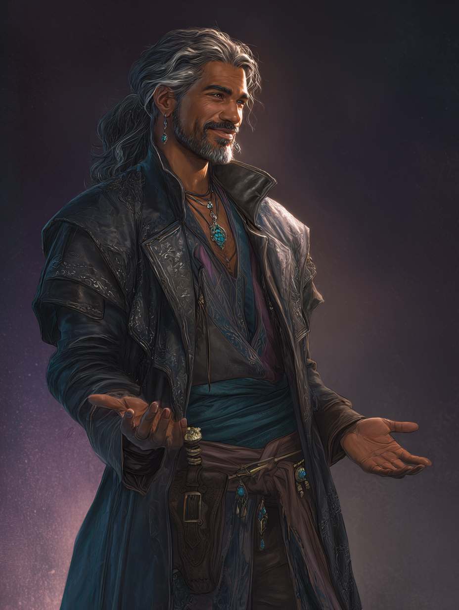

A Dungeons & Dragons Campaign
Session Zero
01 · House Rules
Don't Be a Jerk
It covers more ground than any rule I could write. Applies at the table, in Discord, and everywhere in between.
Avoid "My Guy" Syndrome
"It's what my guy would do" is not a licence to torch the party's plans. Build a character who wants to be here.
Show Up (75%)
You agree you can make it to at least three out of four sessions. If you can't make one, tell me — and let's find someone to cover for you.
No Child Harm
Never visualized, never active. It may be implied as backstory — "I was a slave as a kid," "the army slaughtered the whole village" — and that's where it stops.
Leave IRL Politics Alone
Server-wide and during games. Kainos has enough of its own problems.
Camera Encouraged
Not required — but highly encouraged, and genuinely hoped for by everyone else at the table.
Fade to Black
Content never gets overly gory or sexual. We cut away. The implication does the work.
No Meta-Gaming
No fudging dice. No wiki-cheating for information your character couldn't possibly have. Details on the next slide.
Share the Spotlight
Look for ways to give the other player characters the spotlight. Set them up, hand them the moment, ask them the question.
01 · House Rules
Three specific things I consider meta-gaming. None of them are moral failings — they're just habits that quietly drain the tension out of a scene.
Planning Out of Character
Talking as players about what your characters should do. Instead: talk as your characters about what your characters should do. Same plan, ten times better scene.
Retroactive Requests
Asking privately for things to have happened in-world well after a session has ended. If it didn't happen at the table, it didn't happen.
Silent Advantage
Not calling out when and why you're applying advantage or disadvantage. Say it out loud, every time.
02 · Player Safety
I'd give my campaigns a PG-13 rating, or M for mature. But the ESRB doesn't rate online interactions — and you are all very much a part of the campaign and the world building alongside me. — Brandon, your DM
There are topics you already know I'll never cross into. Beyond those, I want everyone to feel comfortable and safe — so we're not going to guess at it.
Deck of Player Safety
A quick session where you anonymously submit anything that would make you consider leaving the campaign.
Nothing is attributed. Nothing is debated.
It Becomes My Job
Steering clear of what's on those cards is on me, permanently. You never have to bring it up again.
The Line Can Move
If something lands wrong mid-campaign, DM me. No explanation owed, no session required.
03 · The World
Kainos is a fractured world — a planet that is physically broken. Some continents float entirely on their own. You might find that your country isn't separated from its neighbour by a wide ocean, but by the void of space.
Clearly magic — unknown, powerful, and nobody's asking too many questions — holds the planet together, much like a broken vase.
03 · The World
Because of the fractures, Kainos is unstable. The damage to the planet left pockets behind — places where the ordinary rules have quietly stopped applying.
Magic Is Dying
In some places the weave is simply running out. Spells sputter. Old wards fail. People notice.
Magic Runs Wild
In others it acts irrationally — loud, unpredictable, and thoroughly uninterested in your intentions.
Time Flows Differently
A week in, an hour out. Or the reverse. Bring rations and a healthy fear of calendars.
Dreams Overlap Reality
Somewhere out there, what people dream doesn't stay in the dreaming. That's a problem for future us.
03 · Campaign Strategy
Unlike other worlds I've built, players in this campaign are highly encouraged to contribute to the world building. The world is mostly a blank slate on purpose.
Invent What You Need
If the village or city your character is from doesn't exist yet — create it. That's not overstepping, that's the assignment.
One Sentence or Seven Pages
Your lore can be a single line or a full doc. Either way you hand it to me, and I expand it, connect it, place it — and then run with it.
Bottom-Up, Not Top-Down
We start at the starting village and expand as you explore, instead of me pre-designing a world and its inhabitants and waiting for you to find them.
Your characters will have goals. It is my job to build multiple paths to reach them — and to put plenty of fun obstacles in the way.
04 · Character Creation
Level 1, 2024 Rules
Point buy, fixed (average) HP. Want rolled ability scores instead? That's fine — just DM me first.
Any Official WotC
Species, classes, spells, items, feats — all fair game. Third party or homebrew needs approval.
Background + Class Only
You start with exactly the gold and equipment your background and class give you. Nothing extra.
Show Me Who They Are
Write a visual description, or find, source, generate, or commission art. Either works.
A Backstory
A short paragraph is enough. Expansive is welcome. The New Character Questionnaire exists if you're staring at a blank page.
Read Your Story Hook
It's how your character connects to the campaign's opening. Read it on the wiki. We're covering it in three slides.
04 · Character Creation
Three things, and they're banned for the same reason: each one deletes an entire category of problem I'd like to keep putting in front of you.
Silvery Barbs
Boots / Broom of Flying
Helm of Teleportation
04 · The Opening
Every player character in this campaign knows Jasper Lee Wilkins — a charming, morally-questionable human rogue who has been a fixture of the adventuring world for decades. He is the reason you are all heading to Tethermoor.
You've received a letter. Jasper is hanging up the knives and holding a retirement auction: his adventuring gear, including some genuinely impressive items collected over the decades, sold off to a select crowd of people who've impressed him over the years.
It sounds like vintage Jasper: nostalgic, celebratory, a little too good to be true.

04 · The Opening
Choose one (or roll a d6). This is how your character knows Jasper — and why they'd accept the invitation. Making up your own is fine, just run it by me.
Former Employer
Jasper hired you for a job once. The pay was short but the experience was real. He still owes you.
Saved Your Life
You were in over your head and Jasper pulled you out. He's never let you forget it.
Drinking Buddy
More nights than you can count sharing a table and a few lies. He's the most entertaining person you know.
Mutual Job
You worked the same contract. Jasper was… Jasper. Unreliable but undeniably useful. You parted on decent terms.
He Trained You
A fighting trick, a con, or a trade skill. He was a terrible teacher but a great example.
You Owe Him
Jasper did you a favor you never repaid. The invitation feels like the bill finally coming due.
04 · The Opening
Tethermoor
A small trade village on the edge of the continent. That's where the retirement auction is being held.
The Arkanis Are Moving
A conquering military force has been taking over villages and towns in the region. Tethermoor seems far enough out to be safe. Probably.
You May Be Strangers
You may or may not know the other player characters. For many of you, this will be the first time you meet.
Three things to prepare
1. Pick your connection to Jasper from the previous slide.
2. Decide how your character feels about him. Do you like him? Trust him? Owe him? Resent him? All of the above?
3. Have a reason to show up. Loyalty, curiosity, greed — magic items! — or simply nothing better to do.
05 · The Main Event
Most modules hand you the long-term goal up front. "Defeat Strahd." Then some medium-term goals, then all the different ways and pieces to get there. That's fun.
What's more fun, to my mind, is when those goals are given to me by you. What is your character's long-term goal? What is their "Defeat Strahd"?
Developing those together is what brings all of us back to the table, excited to continue in a world we're actually creating.
You Have to Reveal Something
This means revealing parts of your character tonight — their ambitions, their desires. You can keep plenty of backstory to yourself; discovering that in character is half the fun.
But don't be vague with your goals to hide your character.
Vague vs. Playable
Private goal: "Get revenge on the Evil King Kaelsis for killing my family by murdering his."
✗ Stated as "Get revenge" — that's hiding.
✓ Stated as "Get payback against Kaelsis for what he did to my family" — that reveals a lot, and leaves great questions for the others to sus out in play. What did he do? What does payback look like?
If That's Not for You
If you're not comfortable revealing this much about your character, I'd probably say this table isn't for you — and that's genuinely okay.
05 · The Main Event
Every goal you hand me gets checked against these. Three are required; the fourth is extra credit and it's the one that makes your goal interesting.
Achievable
Measurable. There is a moment where we can both point at it and say: done.
Consequential
Failure costs something real. The village burns. The princess marries someone else. Something changes if you lose.
Fun for Everyone
Not just for you. Not fun: let's go become geologists and study rocks.
A Complication
An obstacle already standing in your way. "The princess is already married." Give me one of these and I will build you a campaign around it.
05 · The Main Event
Everything gets DM'd to me on Discord first, so I can check it against the four tests. Once it passes, you say it out loud to the table.
One or Two Long-Term Goals
The campaign runs to level 12. Pick one long-term goal for level 6, and one for level 12.
DM Them to Me
I evaluate: achievable, consequential, fun. If they pass, I'll ask you to share the long-term goal with everyone out loud.
2–3 Medium-Term Goals
Steps that get your character closer to the long-term one. Same loop: DM them, I evaluate, then you share them out loud.
Short-Term Goals
These stay private, and they're probably obvious to you by now. Expect short- and medium-term goals to get replaced as we play. That's the point.
05 · If You're Stuck
Mix and match freely — an objective from one row, a reason from another, a complication from a third. These are prompts, not a menu.
| d19 | Objective | Reason | Complication |
|---|---|---|---|
| 1 | Win the heart of a certain person | A deep-seated desire to be loved | It's all a big misunderstanding |
| 2 | Discover the identity of an important person | A pathological need to be appreciated or admired | A rival is interested in the same thing |
| 3 | Slay a powerful monster | A promise to a dying family member | It's really, really far |
| 4 | Defend a group or settlement from attack | Spite, plain and simple | Someone else did it already, but did it wrong |
| 5 | Discover the location of a fabled natural feature | A hunger for knowledge | Unknowingly missing a key piece of information about it |
| 6 | Obtain a powerful magical artifact | A hunger for power | It's probably got a curse |
| 7 | Find missing people | Everyone else was doing it | There's a religious prohibition against it |
| 8 | Claim an ancestral birthright | It just seemed like fun | An injury prevents me from doing so |
| 9 | Prove a certain phenomenon is not fictional | A prophecy they heard and believe says they will | A person integral to doing so is hostile to them |
| 10 | Defend or mentor a young important person | A prophecy they've never heard says they will, but fate pulls them toward it | A persistent misconception means they are mistaken |
| 11 | Form an alliance between two groups | The pay was too good to turn down | Two other groups are involved in the same goal |
| 12 | Conceal a secret by destroying evidence or a person | Revenge | The trail has gone cold |
| 13 | Interrupt a faction's goals | Prove themselves worthy to a friend or love interest | A classic switcheroo has confused people or items |
| 14 | Destroy or neutralize a powerful person | Get the attention of a patron | An important person or object is destroyed accidentally before progress is made |
| 15 | Reconnect with an important person | Restore their family's good name | Two factions or people who don't get along must cooperate |
| 16 | Discover their true identity | An inexplicable compulsion they've had since childhood | Doing so would break an important law or treaty |
| 17 | Learn important knowledge that has been sealed away | Gain experience in a skill needed for a different task | It's literally never been done before |
| 18 | Kill a god | A god told them to | The enemy has proficient fighters |
| 19 | Solve a puzzle others said was impossible | Someone they love died trying; they intend to finish the job | They risk becoming a social pariah |
Make Goals